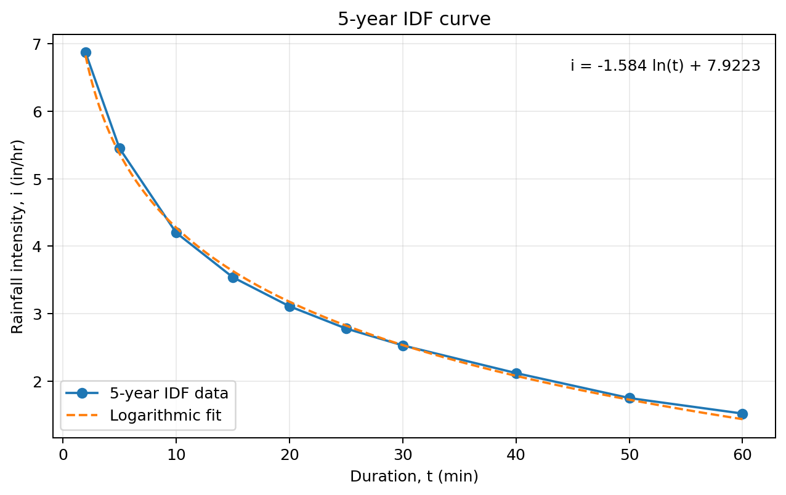
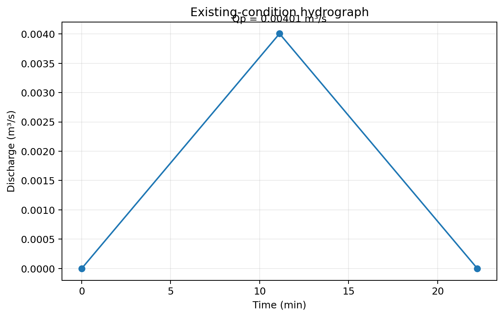
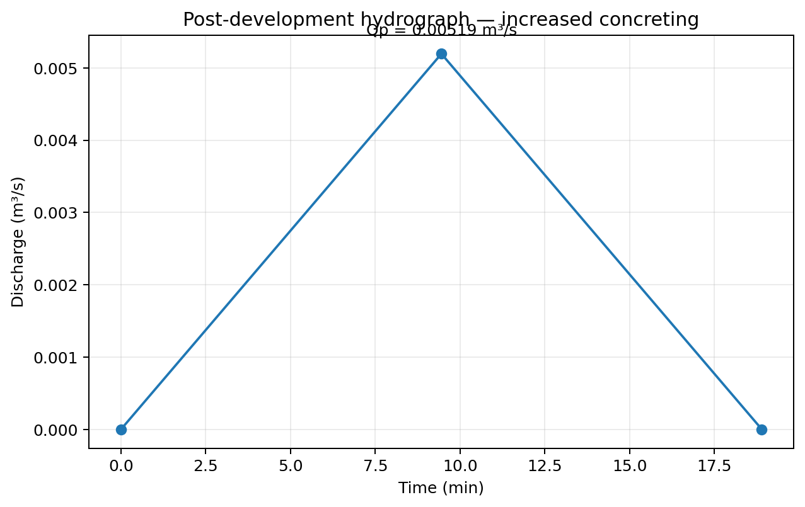
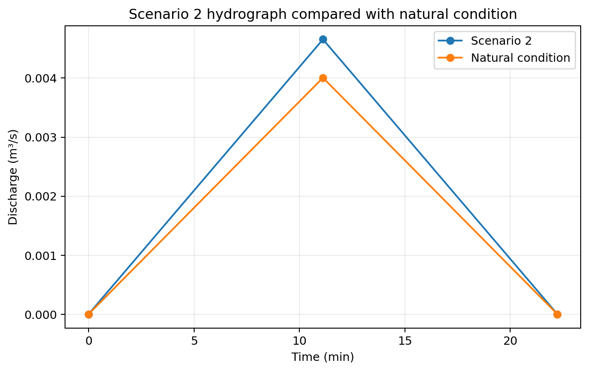

Three connected design problems
The supplied workbook contains six worksheets organized around three design tasks. The first two size storm-sewer networks from catchment properties, rainfall intensity and pipe slope. The third examines how increased surface concreting changes runoff from a 350 m² catchment and then tests detention- and infiltration-based mitigation concepts.
Storm-sewer network — SI units
Five contributing catchments and five sewer reaches are sized using a 5-year intensity equation, the Rational Method and Manning-based diameter checks.
IDF curve + larger network
A second network uses a tabulated 5-year IDF dataset, a logarithmic intensity fit and 14 modeled sewer reaches in U.S. customary units.
Urbanization & mitigation
Existing runoff is compared with a higher-imperviousness scenario, followed by a detention-storage check and an infiltration-based calculation.
Equations used in the workbook
The calculations are explicit in the Excel formulas. The site reproduces the equations used rather than replacing them with a generic drainage summary.
Intensity i in mm/hr and duration/concentration time t in minutes.
Used with A in m² and i in mm/hr to obtain discharge in m³/s.
Workbook form for A in acres, i in in/hr and Q in ft³/s.
Used to compute a preliminary sewer diameter before selecting a practical pipe size.
Velocity is recomputed from the selected pipe diameter.
Travel time in minutes is propagated downstream when determining concentration time.
Used in the land-development problem for overland time of concentration.
Intensity equation used for the 350 m² catchment scenarios.
Problem 1 — storm-sewer sizing in SI units
The first worksheet uses Manning's coefficient n = 0.013 and a 5-year return period. Catchment area, runoff coefficient, inlet time, sewer length and slope are supplied for five contributing catchments. The downstream reaches accumulate contributing area and ∑CA, while concentration time accounts for inlet and upstream travel time.
| Reach | Total area (m²) | tc (min) | Intensity (mm/hr) | Q (m³/s) | Computed D (m) | Selected D (m) | V (m/s) |
|---|---|---|---|---|---|---|---|
| AC | 16,000 | 15.00 | 127.12 | 0.395 | 0.547 | 0.55 | 1.66 |
| BC | 16,500 | 17.00 | 122.53 | 0.347 | 0.525 | 0.53 | 1.57 |
| DC | 17,000 | 14.00 | 129.54 | 0.356 | 0.523 | 0.52 | 1.68 |
| CE | 63,500 | 18.68 | 118.93 | 1.358 | 0.892 | 0.89 | 2.18 |
| EF | 76,000 | 18.93 | 118.41 | 1.640 | 0.948 | 0.95 | 2.31 |
Problem 2 — 5-year IDF curve and a larger drainage network
The second worksheet starts from ten 5-year IDF points ranging from 2 to 60 minutes. The workbook chart applies the logarithmic relationship i = −1.584 ln(t) + 7.9223 to obtain intensity at each sewer's concentration time. Fourteen reaches are then sized using contributing area, slope, accumulated runoff weighting, Rational Method discharge and the Manning-based diameter expression.

| Reach | Area (acres) | tc (min) | i (in/hr) | Q (ft³/s) | Selected D (ft) | V (ft/s) |
|---|---|---|---|---|---|---|
| 1.1–2.1 | 2.30 | 12.00 | 3.986 | 6.469 | 1.31 | 4.80 |
| 1.2–2.1 | 1.25 | 9.80 | 4.307 | 4.070 | 1.32 | 2.97 |
| 2.1–3.1 | 7.40 | 13.77 | 3.768 | 21.376 | 2.30 | 5.14 |
| 2.2–3.1 | 0.55 | 5.40 | 5.251 | 2.038 | 1.20 | 1.80 |
| 3.1–4.1 | 8.75 | 14.34 | 3.704 | 24.840 | 2.60 | 4.68 |
| 3.2–4.1 | 0.70 | 6.30 | 5.007 | 2.296 | 1.00 | 2.92 |
| 3.3–4.1 | 1.75 | 11.60 | 4.040 | 4.988 | 1.40 | 3.24 |
| 4.1–5.1 | 13.30 | 14.91 | 3.643 | 36.763 | 3.40 | 4.05 |
| 4.2–5.1 | 0.75 | 7.70 | 4.689 | 2.659 | 1.30 | 2.00 |
| 5.1–6.1 | 15.35 | 15.67 | 3.564 | 41.023 | 3.80 | 3.62 |
| 5.2–6.1 | 0.65 | 12.20 | 3.960 | 1.816 | 0.80 | 3.61 |
| 5.3–6.1 | 1.75 | 16.80 | 3.453 | 3.655 | 1.30 | 2.75 |
| 6.1–7.1 | 18.40 | 17.56 | 3.383 | 45.855 | 2.50 | 9.34 |
| 7.1–8.1 | 20.65 | 17.82 | 3.359 | 51.244 | 4.70 | 2.95 |
Problem 3 — urbanization scenarios and mitigation checks
The third design problem holds catchment area (350 m²), overland length (120 m) and land slope (0.001) constant while changing runoff behavior to represent development. The existing-condition runoff coefficient is 0.38. The concreting scenario increases it to 0.475 and uses a revised concentration time of 9.45 min, increasing peak discharge.
| Case | Key change | tc (min) | Rainfall intensity (mm/hr) | Peak Q (m³/s) | Workbook conclusion |
|---|---|---|---|---|---|
| Existing condition | C = 0.38 | 11.12 | 108.42 | 0.00401 | Baseline |
| Scenario 1 — increased concreting | C = 0.475; revised tc | 9.45 | 112.49 | 0.00519 | Higher peak runoff |
| Scenario 2 — detention-area concept | Effective contributing area = 325.5 m² | 11.12 | 108.42 | 0.00466 | Proposed storage inadequate |
| Scenario 3 — infiltration calculation | Calculate infiltration needed to offset excess runoff | 11.12 | 108.42 before adjustment | 0.00501 before adjustment | Required infiltration ≈ 6.69 mm/hr |
Scenario 2 — detention-storage check
The workbook assigns 24.5 m² to the detention-storage area with a 0.01 m detention depth, producing 0.245 m³ of storage. A triangular-hydrograph excess-volume check gives a required storage of approximately 0.434 m³; the Excel logic therefore returns “No” for the adequacy test.
Scenario 3 — infiltration-based mitigation
Using the excess discharge between the natural and changed condition, the workbook calculates an infiltration rate of approximately 6.695 mm/hr. It also calculates an equivalent runoff coefficient of approximately 0.358 for the natural-discharge target under the worksheet's stated rainfall-intensity calculation.
All graphs from the workbook
The Excel workbook contains four chart objects. All four are reproduced below from the cached workbook data so the design logic is visible directly on the project page.



Engineering takeaway
The project combines network sizing with scenario analysis rather than treating stormwater design as a single discharge calculation. It demonstrates the full chain from catchment inputs and rainfall relationships to concentration time, sewer sizing, hydraulic checks and post-development mitigation testing. The most useful lesson from the final scenarios is that a mitigation idea must be checked quantitatively: the detention concept appears plausible geometrically but fails the workbook's required-storage test.